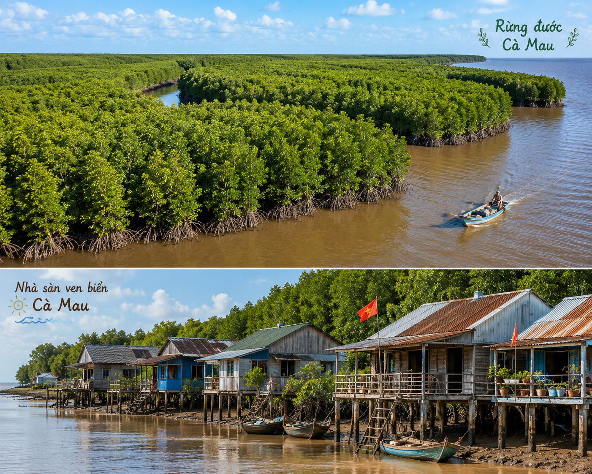

Lời dẫn: Ba tiếng "Mũi Cà Mau" gợi lên trong bạn những suy nghĩ, cảm xúc gì? Vùng đất cuối cùng của dải đất hình chữ S luôn mang trong mình sức hút kì lạ từ hạt phù sa tươi mới, những rừng đước bạt ngàn đến những mảng kí ức văn học lắng sâu. Hãy cùng theo chân nhà văn Trần Tuấn trong chuyến du ngoạn về Đất Mũi để khám phá khái niệm "quê xứ" rộn ràng mà sâu lắng.
• Tên khai sinh: Trần Ngọc Tuấn (sinh năm 1967), quê ở Hà Nội.
• Phong cách sáng tác: Thơ và kí của ông mang đậm chất lãng mạn, sự quan sát tinh tế, ghi nhận sinh động đời sống thực tế kết hợp với những liên tưởng văn học phong phú, giàu chất trữ tình.
• Tác phẩm chính: Ma thuật ngón (thơ, 2008), Đừng gọi tôi là Lại Phiền Hà (kí sự, 2008), Uống cà phê trên đường của Vũ (tập kí, 2017)...
Đặc trưng tản văn trong tác phẩm:
• Mục đích ban đầu: Trả lời ngắn gọn "Đi chơi." để đánh lừa "ổ cứng xúc cảm", tháo bỏ áp lực công việc để "lỏng tay thơ thẩn với Cà Mau".
• Ý nghĩa tâm thế: Tạo tinh thần thoải mái, đón nhận trọn vẹn và tự nhiên nhất mọi rung cảm của thiên nhiên và con người Đất Mũi.
Hình 1: Đất Mũi Cà Mau - Nơi tận cùng phía Nam của Tổ quốc (h1.png)
Định nghĩa / Khái niệm trong bài:
"Ổ cứng xúc cảm" / "Cái phai": Chỉ những kí ức, hiểu biết, ấn tượng định hình lâu dài trong tâm trí người đọc về một vùng đất qua trang sách văn học.
Tác giả đã liên tưởng đến các tên tuổi lớn từng viết về Cà Mau:
Tại sao tác giả lại đốt tập thơ của người bạn thả xuống biển Cà Mau?
Bức tranh cuộc sống được tái hiện qua những chi tiết thực tế, chân thực:

Hình 2: Cảnh sinh hoạt và rừng đước đặc trưng ở Mũi Cà Mau (h2.png)
✋ Hoạt động: Tìm hiểu ý nghĩa thực tế của việc "Nguyễn Tuân chưa từng về đến Cà Mau"
Từ "Xứ" vang lên du dương khắp hành trình miền Tây: "Nhà em ở Ngã Năm Sóc Trăng, xứ ấy...", "Tui từ xứ Bạc Liêu qua...", "Cà Mau là xứ quê mùa...". Kết hợp thành "Quê xứ" - một khái niệm vừa quen thuộc vừa thiêng liêng, biến một vùng đất xa xôi thành quê hương thân thương trong lòng mỗi người Việt Nam.
Cá thòi lòi ở Đất Mũi là loài cá vô cùng độc đáo: vừa biết bơi dưới nước, vừa biết chạy nhảy rột rẹt trên mặt bùn sình, thậm chí có thể leo lên cả thân cây đước!
Tự viết một đoạn kí hoặc nhật kí hành trình ghi lại những cảm xúc thực tế khi bạn đặt chân đến một vùng đất mới, kết hợp giữa việc ghi chép cảnh vật và cảm xúc cá nhân.
Khi đọc tản văn và kí, cần chú ý phân biệt giữa các thông tin khách quan (địa danh, con người, số liệu) và các yếu tố chủ quan (cảm xúc, suy tưởng, liên tưởng văn học của tác giả).
| Giá trị Nội dung | Giá trị Nghệ thuật |
|---|---|
|
- Tái hiện chân thực, sống động thiên nhiên và con người vùng Đất Mũi Cà Mau. - Bày tỏ tình yêu mộc mạc, sâu sắc đối với vùng đất "quê xứ" tận cùng Tổ quốc. |
- Ngôn ngữ đậm chất Nam Bộ, du dương, giàu hình ảnh. - Bối cảnh liên tưởng văn học phong phú, phóng khoáng. - Kết hợp nhuần nhuyễn giữa ghi chép thực tế và cảm xúc trữ tình. |
Trả lời 10 câu hỏi để chinh phục đỉnh cao tri thức văn học!
Hình ảnh cây đước và trái đước có vai trò như thế nào trong biểu tượng về sức sống Đất Mũi Cà Mau?
Hướng dẫn giải:
• Cây đước cắm sâu rễ xuống sình lầy giữ đất, bảo vệ bờ biển trước sóng gió. Trái đước khi chín rụng xuống tự cắm thẳng vào phù sa để tiếp tục sinh sôi thế hệ mới.
• Hình ảnh cây đước đại diện cho sức sống kiên cường, bền bỉ của thiên nhiên và con người Cà Mau trải qua bao biến động lịch sử và thử thách sinh thái.
Từ ý của câu: "Không có khói, mà sao bước chân lên tàu rời Mũi, mắt tôi chợt cay nhoè.", viết đoạn văn ngắn bày tỏ cảm xúc của tác giả đối với Mũi Cà Mau.
Đoạn văn tham khảo:
Câu nói cuối tác phẩm "Không có khói, mà sao bước chân lên tàu rời Mũi, mắt tôi chợt cay nhoè" đã đọng lại trong lòng người đọc một chất trữ tình sâu lắng. Than đước xứ Cà Mau đượm lửa và nổi tiếng không hề có khói, vì vậy giọt nước mắt rơm rớm trên mi mắt nhà văn khi rời Đất Mũi không phải do khói làm cay. Đó chính là giọt nước mắt xúc động chân thành của một tâm hồn du khách đã trót lòng yêu thương, gắn bó với dải đất tận cùng Tổ quốc. Sau những trải nghiệm thực tế đầy tươi mới, tiếp xúc với những con người mộc mạc, kiên cường và đắm mình trong dải phù sa đầy chất thơ, tác giả nhận ra Cà Mau đã trở thành một phần "quê xứ" trong tim mình. Sự chia tay đầy lưu luyến ấy khẳng định sức lay động mãnh liệt của thiên nhiên và con người Đất Mũi đối với bất kì ai từng đặt chân đến nơi đây.